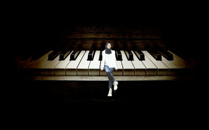
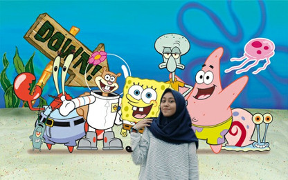
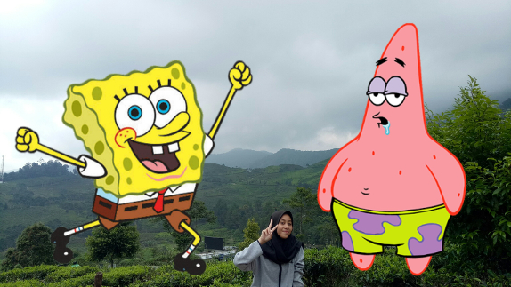

Perkenalkan namaku Azizah Zelia Kusmo biasa dipanggil Azizah atau Zizah. Aku lahir di Bogor pada tanggal 11 bulan Maret tahun 2001. Aku tinggal di Bogor tepatnya di Ciawi. Aku anak ke-2 dari 3 bersaudara. Ayah saya bernama Bonnie Prasetyo Kusumo, bekerja sebagai pegawai swasta. Ibuku bernama Susan Twisawati Indiani Arifin, bekerja sebagai Pegawai Negeri Sipil. Kakak laki-lakiku bernama Muhammad Rafi Kusumo, ia kelas 12 SMK disalah satu sekolah yang berada di Ciawi. Adik laki-lakiku bernama Muhammad Zaki Atthari Kusumo, ia kelas 4 SD disalah satu sekolah di Ciawi.
Pendidikanku dimulai dari tahun 2004, tepatnya di TKIT Raudlatul Jannah, kemudian pada tahun 2008-2013 aku melanjutkan pendidikanku di SDIT Raudlatul Jannah. Selanjutnya pada tahun 2014-2016 aku melanjutkan sekolahku di Pondok Pesantren Ar-Rahman Boarding School. Dan sekarang aku sedang menuntut ilmu disekolahSMK-SMAK Bogor.
Hobiku bermain piano . Aku mulai suka bermain piano sejak TK. Karena dulu ayahku sering sekali mengajarkanku bermain alat musik tersebut, dan aku sangat suka. Aku juga suka dengan kartun Spongebob Squarepants karena karakternya yang sangat setia kawan dengan sahabatnya dan selalu senang dengan keadaan apapun
 